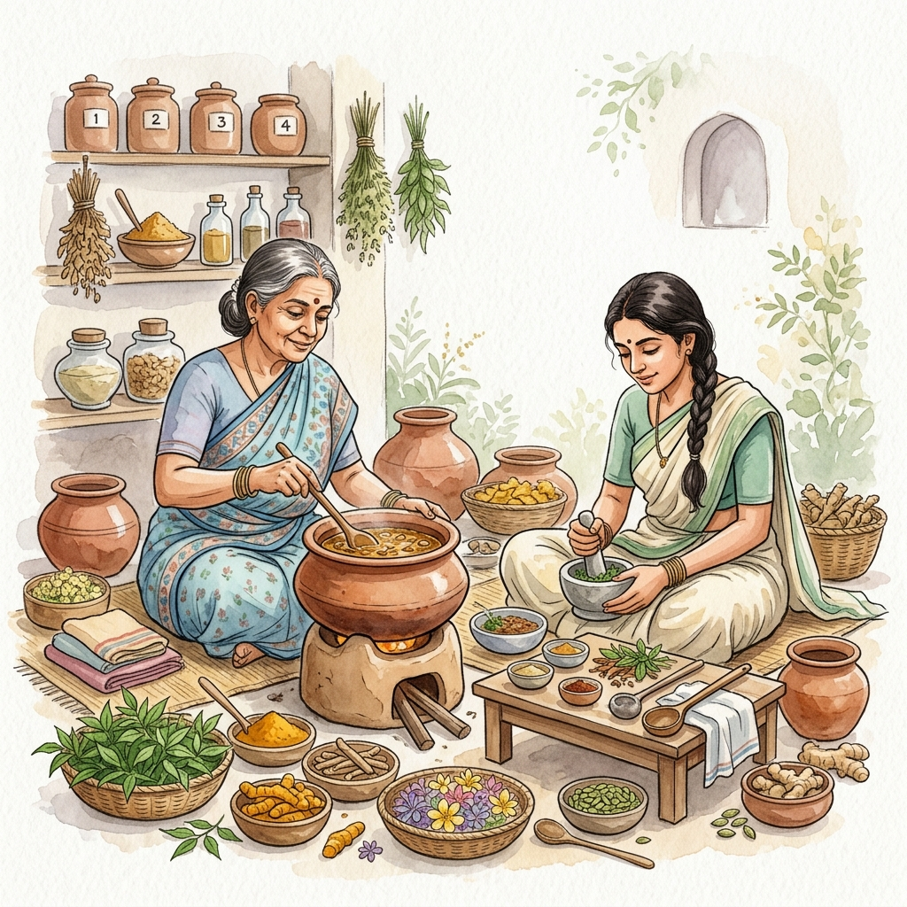

Bridging centuries-old Ayurvedic wisdom (Hela Vedakama) with state-of-the-art Deep Transfer Learning, Health-Context-Aware RAG, and Climate Forecasting to safeguard medicinal botanical supply chains.
In Sri Lanka's indigenous medicine ecosystem, the therapeutic efficacy of traditional formulations (such as Kashaya, Arishtam, and Taila) is critically compromised by two compounding threats: the rampant misidentification of genuine medicinal flora with morphologically similar, ineffective, or toxic commercial adulterants, and the harvesting of diseased leaves contaminated by fungal and bacterial pathogens. Furthermore, general large language models often hallucinate dosage and contraindication advice without accounting for patient-specific health conditions (e.g., pregnancy, chronic renal conditions, or pharmaceutical interactions), while shifting climatic patterns threaten endemic herbal sanctuaries.
This research project presents Bio-Heritage AI: a unified, multi-modal artificial intelligence framework comprising four interconnected systems: (1) An Authentication Engine powered by fine-tuned EfficientNetB0 with Out-of-Distribution (OOD) rejection trained on 3,095 expert-validated botanical specimens across 21 species; (2) A Health-Context-Aware RAG Assistant with SVM intent classification, Random Forest safety prediction, and SHAP explainability grounded in 1,550 verified herb records; (3) A Leaf Pathology & Quality Scoring System utilizing EfficientNetB4 with an automated Ayurvedic Medicinal Suitability (AMS) Quality Grading framework (Grades A–D) and harvest withholding period alerts; and (4) A Climate Forecasting Engine leveraging Facebook Prophet to predict 2026–2030 regional habitat shifts. Together, this ecosystem ensures safety, preserves cultural heritage, and standardizes Ayurvedic pharmacognosy.

Bio-Heritage AI brings together four specialized research modules developed collaboratively by our four-member undergraduate research group.
Deep transfer learning authentication engine (EfficientNetB0) detecting morphological look-alikes and commercial adulterants with Out-of-Distribution rejection and explicit Visha Haranaya toxicity alerts.
Source-grounded RAG assistant utilizing FAISS semantic search, SVM intent classification, Llama 3.2, and SHAP-explained Random Forest contraindication risk scoring with proactive patient health questioning.
Fine-tuned EfficientNetB4 convolutional neural network categorizing 5 pathological leaf states, computing an automated 4-tier Ayurvedic Medicinal Suitability (AMS) Quality Grade (A–D), and enforcing 30–45 day harvest withholding warnings.
Predictive environmental model leveraging Facebook Prophet time-series models to forecast temperature and precipitation patterns across Sri Lanka up to 2030, projecting shifting geographic cultivation zones.
Detailed findings gathered through comprehensive literature survey, domain gap analysis, and system engineering.
Traditional Sri Lankan medicine—encompassing Deshiya Chikitsa and classical Ayurveda—possesses documented histories spanning over three millennia. The purity of active botanical phytochemicals (such as alkaloids, flavonoids, tannins, and glycosides) is the primary determinant of therapeutic potency in Ayurvedic pharmacognosy.
Platforms like PlantNet, iNaturalist, and Google Lens have attained commendable accuracy on broad European and North American floras. However, our survey reveals that these models perform poorly on endemic Sri Lankan taxa, lack fine-grained feature discriminators for close cultivars, and lack mechanisms to distinguish toxic look-alikes.
Prior research demonstrates that off-the-shelf generative LLMs (GPT-4, Claude, LLaMA) hallucinate Ayurvedic herbal dosages at rates exceeding 32% when prompted with colloquial queries. Existing medical RAG applications focus on allopathic clinical notes and fail to incorporate traditional Ayurvedic doshic contraindications or drug-herb interactions.
Plant pathology literature establishes that foliar pathogens (such as Colletotrichum causing Anthracnose, and Xanthomonas causing Bacterial Leaf Spot) synthesize carcinogenic mycotoxins and degrade active therapeutic compounds. No existing digital herbarium system currently evaluates leaf health prior to formulation clearance.
IPCC climate assessments and the Department of Meteorology of Sri Lanka document changing rainfall regimes in the intermediate and dry agro-ecological zones. Cultivation habitats of vulnerable medicinal shrubs require proactive geographic modeling to safeguard raw botanical pipelines.
Through our systematic literature review and clinical interviews with Ayurvedic physicians at Gampaha Wickramarachchi Ayurveda University, four pivotal gaps in current systems were identified:
Standard computer vision models operate under a closed-world assumption: when presented with an unknown leaf or non-medicinal weed, they force a prediction into the highest-softmax class. They fail to trigger an "Unknown Specimen" rejection or highlight toxic look-alikes (e.g., confusing toxic Datura metel [Attana] with genuine medicinal cultivars).
Standard health chatbots answer dosage questions blindly without inquiring whether the user is pregnant, nursing, suffering from renal failure, or taking pharmaceutical anticoagulants. No system actively requests missing health context before querying Ayurvedic databases.
Agricultural disease models output only a binary "disease name" without translating this prediction into an Ayurvedic manufacturing clearance. There is no automated framework connecting CNN classification confidence to Ayurvedic pharmaceutical standards (such as suitability for oral Kashaya vs. topical Lepa vs. strict rejection).
Plant systems treat habitat distribution as static historical points rather than dynamically shifting ranges under future climate scenarios up to 2030 in Sri Lanka's unique topography.
In Sri Lanka's indigenous healthcare sector, the adulteration of rare medicinal plants, the harvest of pathologically contaminated leaves, and unverified herbal self-medication present severe clinical hazards, compounded by climate-induced habitat loss.
Main Objective: To develop a cohesive, multi-modal artificial intelligence framework ("Bio-Heritage AI") to authenticate botanical genuineness, evaluate leaf pathological quality, dispense safe health-context-grounded Ayurvedic knowledge, and forecast regional cultivation habitats across Sri Lanka.
The Bio-Heritage AI architecture employs a decoupled, multi-modal pipeline architecture. Data flows through specialized sensory intake pipelines into dedicated neural and statistical decision engines:
Bio-Heritage AI leverages an industry-standard modern technology stack optimized for deep learning reproducibility, explainable AI, and cross-platform deployment:
Compound-scaled convolutional neural backbones fine-tuned on botanical and pathological datasets with Keras 3 multi-backend.
Facebook AI Similarity Search engine indexing all-MiniLM-L6-v2 embeddings for high-speed nearest-neighbor retrieval.
High-precision query intent classification classifying Ayurvedic queries into dosage, property, disease, and contraindication paths.
Supervised contraindication risk classifier with TreeSHAP explainability illustrating patient condition feature importances.
Additive time-series regression forecasting multi-year temperature and precipitation dynamics across Sri Lankan agro-zones.
High-performance asynchronous Python backend exposing RESTful prediction endpoints with Swagger OpenAPI documentation.
Fully compliant with W3C web standards, modern glassmorphism styling, and responsive layout without JavaScript dependencies.
Local LLM execution framework generating strictly grounded natural language answers from retrieved Ayurvedic knowledge chunks.
All degree project assessments, timelines, allocated marks, and deliverables aligned with the SLIIT Faculty of Computing CDAP curriculum.
Initial defense and proposal document outlining the research motivation, literature review, problem formulation, and feasibility analysis of the Bio-Heritage AI framework. Defines individual member research scopes across Botanical Authentication, RAG Herb Assistant, Phytopathological Leaf Health Detection, and Climate Forecasting.
Literature mastery (25%), Problem articulation & Novelty (30%), Methodology design (25%), Oral defense (20%).
Evaluation of foundational model architecture, dataset acquisition, and exploratory data analysis. Member 1 completed Haldummulla botanical garden dataset validation; Member 2 finalized Ayurvedic herb vector chunking & FAISS semantic embedding; Member 3 trained baseline EfficientNet models; Member 4 completed historic climate data ingestion.
Data pipeline validity (30%), Baseline model results (30%), System integration progress (20%), Individual progress (20%).
Mid-term milestone demonstrating end-to-end integration of all microservices into the core gateway. Validates Member 1 Out-of-Distribution (OOD) rejection, Member 2 Health-Context-Aware clarification logic and SHAP explainability, Member 3 AMS Quality Grading Algorithm (Grades A-D) and Withholding Period protocols, and Member 4 Prophet time-series predictions.
Integration completeness (35%), Accuracy & Benchmarking (30%), Safety logic (20%), Live Demo (15%).
Comprehensive capstone defense of the Bio-Heritage AI ecosystem. Includes individual thesis documents, common final research document, live end-to-end system defense, code inspection, and viva voce evaluation by internal and external academic examiners.
Research rigor & contribution (30%), Software implementation (25%), Component depth (25%), Thesis quality (20%).
Rigorous individual oral examination by panel experts probing the mathematical foundation, algorithmic rationale, architectural decisions, dataset hygiene, and individual contributions of each researcher.
Theoretical depth (35%), Code mastery & individual contribution (35%), Domain justification (30%).
| Assessment Milestone | Target Date | Weightage | Key Deliverables | Evaluation Status |
|---|---|---|---|---|
| Project Proposal | February 2026 | 10% | Proposal Document, Research Charter, Oral Defense Slides | Completed |
| Progress Presentation - 1 | May 2026 | 15% | EDA Report, Haldummulla Dataset Validation, Baseline CNN & Embeddings | Completed |
| Progress Presentation - 2 | August 2026 | 15% | Live Integration Demo, AMS Quality Grading Engine, SHAP Explainability | Completed |
| Final Assessment | November 2026 | 60% (Core) | Final Main Report, 4 Individual Theses, Production Deployment | Scheduled (Nov 2026) |
| Viva Voce Examination | November 2026 | (Part of Final) | Individual Code Defense, Pharmacognosy Domain Audit, Stress Testing | Scheduled (Nov 2026) |
Listing all research documentation produced and those currently pending submission, available for examiner and peer review.
Research proposal on "Medicinal Leaf Pathology Detection & Ayurvedic Medicinal Suitability (AMS) Quality Grading System using EfficientNetB4".
Research proposal on "Health-Context-Aware RAG and Explainable ML for Safe Sri Lankan Indigenous Herb Information Retrieval".
Research proposal on "Medicinal Plant Climate Forecasting & Regional Habitat Suitability Prediction using Facebook Prophet Models".
Research proposal on "Medicinal Plant Botanical Authentication & Out-of-Distribution Adulterant Detection using Deep Transfer Learning".
Formal charter document establishing project governance, timeline milestones, resource allocation, and responsibilities for Group R26J-IT-020.
Audited checklists verifying adherence to SLIIT Faculty of Computing guidelines, research integrity standards, and dataset licensing compliance.
Unified capstone research dissertation synthesizing findings, cross-component API architecture, benchmark matrices, and clinical evaluations.
Four comprehensive individual research dissertations corresponding to Component 1, Component 2, Component 3, and Component 4.
Access presentation slide decks evaluated during oral assessments, with active provisions for upcoming capstone defenses.
Meet the academic supervisor and student researchers behind the Bio-Heritage AI project at SLIIT Faculty of Computing.
Senior Lecturer, Department of Computer Science & Software Engineering, Faculty of Computing, Sri Lanka Institute of Information Technology (SLIIT). Guiding research design, architectural integrity, and academic review across all 4 research components.
Reach out for inquiries regarding dataset access, academic collaborations, model evaluation, or CDAP project feedback.
Sri Lanka Institute of Information Technology (SLIIT)
Faculty of Computing, New Kandy Road, Malabe, Sri Lanka.
Primary: research.ayurveda@sliit.lk
Supervisor: thisara.s@sliit.lk
Academic Department: +94 11 754 4801
CDAP Coordination Desk: +94 11 754 4800
SLIIT CDAP Portal: http://cdap.sliit.lk/
Group Code: R26J-IT-020
Use the standard inquiry form below or copy the pre-formatted General E-mail Template directly into your email client.
To: research.ayurveda@sliit.lk CC: thisara.s@sliit.lk Subject: [CDAP R26J-IT-020 Inquiry] <Insert Subject Here> Dear Bio-Heritage AI Research Group / Supervisor, My name is <Your Full Name> from <Your Institution / Organization>. I am writing regarding the CDAP Research Project "Bio-Heritage AI: Multi-Modal Framework for Preserving Sri Lankan Indigenous Medical Knowledge". Inquiry Details: ---------------------------------------------------------------------- <Please specify your inquiry: dataset request, collaboration, or evaluation> ---------------------------------------------------------------------- Kindly let me know the appropriate next steps or documentation. Best regards, <Your Name> <Your Contact Email / Phone>